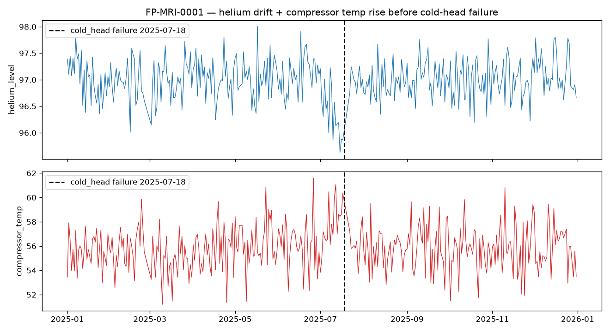

EDA · v1
Objective: before building any model, check whether the fleet's sensors actually drift ahead of a failure — because if they don't, there is nothing to predict.
For MRI cold-head failures, the warning is real and readable: helium level drifts down and compressor temperature creeps up in the weeks before failure — but noisily, and not every time. That is exactly the signal a 7-day risk model can learn, and the noise is why a naïve threshold rule won't do.
Machine FP-MRI-0001 is representative: through the first half of the year both signals sit in their normal band. In the ~3 weeks before the cold-head failure, helium trends down and compressor temperature trends up together — then resets after the repair.

Drift precedes failure, so rolling-window features on these sensors carry real predictive information.
The drift lives inside normal variation — separating it needs a model that combines several weak signals.
Sudden failures cap achievable recall — and keep the problem honest rather than suspiciously easy.
Takeaway
The data earns a model: a 7-day risk score built on rolling sensor + error-burst features should beat a simple threshold, because the warning is genuine but buried in noise.